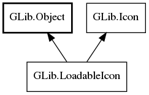

GLib.LoadableIcon Reference Manual
Packages
gio-2.0
GLib
LoadableIcon
load
load_async
LoadableIcon
Object Hierarchy:

Description:
public
interface
LoadableIcon
:
Object
,
Icon
All known implementing classes:
FileIcon
Namespace:
GLib
Package:
gio-2.0
Content:
Methods:
public
abstract
InputStream
load
(
int
size,
out
string
? type,
Cancellable
? cancellable =
null
)
throws
Error
public
abstract
async
InputStream
load_async
(
int
size,
Cancellable
? cancellable =
null
,
out
string
? type =
null
)
throws
Error